WR-Connect:
Software Accuracy and Applicability
The Computational Method Accuracy
WR-Connect is based on three presolved EM problems: scattering by a uniaxial junction of two rectangular waveguides, a cavity formed by a larger waveguide section between smaller I/O waveguides, and a diaphragm of smaller waveguide section between two larger waveguides. The mode-matching technique has been used for the analysis of those three problems. As we know the problem is solved in terms of equations of matrices of infinite rank, the matrices are truncated to maximum 200 modes in the junctions and cavities, and only dominant mode in the input/output waveguide nodes is counted. Since the s-parameters of each single scattering element are represented by 2x2 matrix of a two-port network, the s-parameters corresponding to whole structure are computed by sequential cascading of all s-matrices. The accuracy of such approach cannot be expressed as a single number or simple formula, because it depends on the waveguide structure it is applied to. Nonetheless, a general idea about accuracy of simulation results expected for particular class of waveguide structures can be summarized.Waveguide Structures
It is found that WR-Connect can be effectively applied to wide-band high-low impedance structures and connections: small-gap corrugated waveguides, stepped transformers, and wide-band iris filters (see Table 1 for details). The software can be also used to simulate the narrow-band resonant structures, if proper correction factors are applied to the simulation results and tuning elements are provided for the designed hardware.| Hardware Type | EDM | Fine Milling |
Soldering, die-casting |
Quoting/Proposing (performance evaluation) |
| Corrugated filters with small gaps | +++ | ++ | - | +++ |
| Corrugated filters with large gaps | ++ | ++ | - | +++ |
| Transformers and high-pass filters based on stepped impedance structures | +++ | ++ | + | +++ |
| Wide-band iris filters | ++ | ++ | + | +++ |
| Narrow-band iris filters | + | + | + | +++ |
| Cascaded assemblies of wide-band and narrow-band filters | + | + | - | +++ |
|
Exact designing (+++) Designing with correction factors taken into account (++) Designing with tuning elements (+) Cannot be designed (-) |
||||
Design Examples
Example #1: Small-Size-Gap Corrugated Filter
WR-Connect is practically accurate, if applied to corrugated waveguide filters of Cohn's [1], Levy's [2] and Goulouev's [3] types - periodic, aperioudic or coupled corrugated waveguide structures with small gaps and shallow corrugations. Here the words "practically accurate" mean that the computational accuracy of WR-Connect is greater than the accuracy of conventional fabrication methods and accuracy of measurement equipment applied to the prototype. For example, rounding the corners of corrugations when milling can deviate the performance of the fabricated hardware from its ideal simulated performance more than natural inaccuracy of simulation.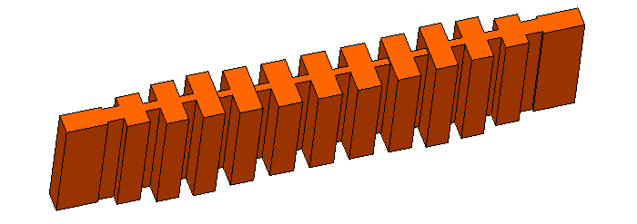
Figure 1a: Ka-band corrugated waveguide filter - 3D surface view
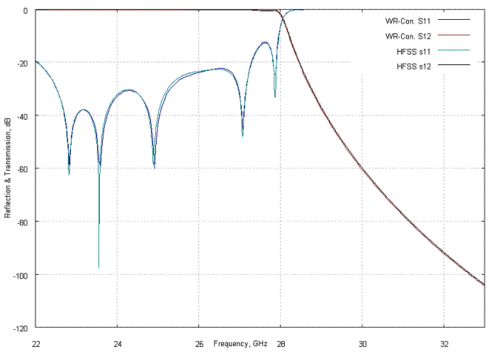
Figure 1a: Reflection and transmission (dB) versus frequency (GHz) computed using different software For corrugated filters with larger gaps and cavities, WR-Connects's simulation also well correlates with measurement and other type of software rated as "full-wave" or "EM-based". However insignificant correction factors can be applied in order to precisely adjust the roll-off.
Example #2: Middle-Size-Gap Corrugated Filter
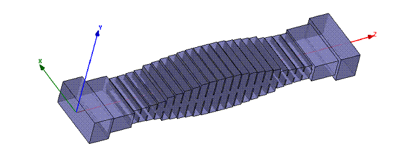
Figure 2a: WR-112 corrugated waveguide filter - 3D surface view
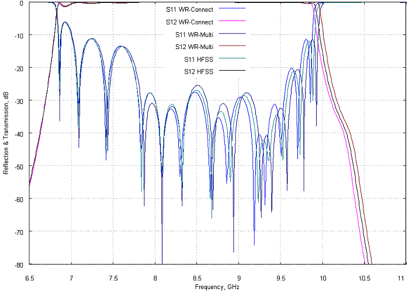
Figure 2a: Reflection and transmission (dB) versus frequency (GHz) computed using different software
Wide-Band Iris Filters
The WR-137 Receive-Reject Filter (Figure 3a) is a wide band H-plane iris filter based on thick and wide H-plane irises. Three filters of this type have been designed using WR-Connect, the obtained simulation results have been compared with the simulation results obtained by other full-wave software, and the results have matched each other with insignificant tolerance (see Figure 3b for example).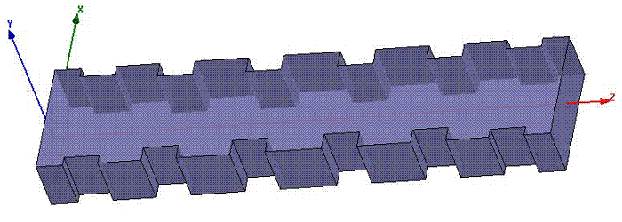
Figure 3a: A C-band high-pass filter using thick H-plane irises - 3D surface view
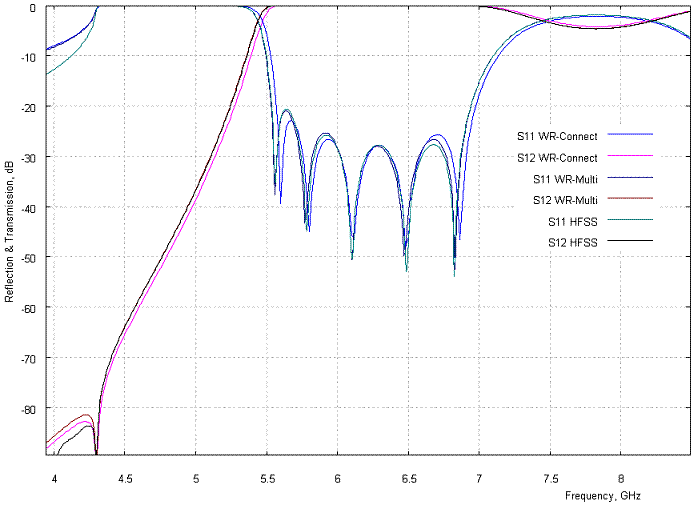
Figure 3b: Reflection and transmission (dB) versus frequency (GHz) computed using different software
Example #2: Middle-Band and Narrow-Band H-plane Iris Filters
For conventional H-plane iris filters (see Figure 4a) with bandwidth about 10% or less, the WR-Connect's simulated performance still shows similarity with the performance tested or simulated by a full-wave software, however the real bandwidth has a tendency to be wider and lower, than WR-Connect simulates (see Figure 4b). In order to compensate such bandwidth distortion, a proportional reduction of the width of each iris and the length of each cavity is recommended prior to fabrication. Tuning screws are also recommended to put in the middle of irises and cavities in order to achieve a low reflection ripple. As the fabrication tolerances can also much degrade performance of narrow-band filters, the sensitivity analysis has to be performed, the derived tolerance factors have to be added to the WR-Connect inaccuracy factors, and the net uncertainties caused by software and fabrication inacuracy have to be evaluated over the hardware tunability. If all those recommendations are followed, WR-Connect can be used to design high performance mid-band and narrow-band iris filters.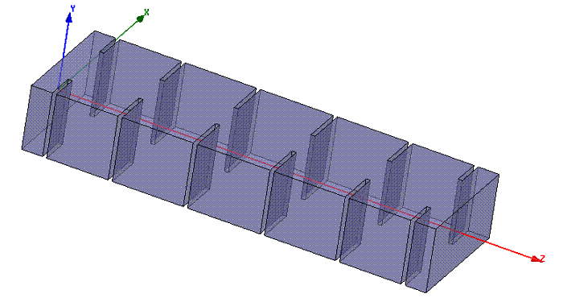
Figure 4a: WR-62 Receive-Reject Filter - 3D surface view
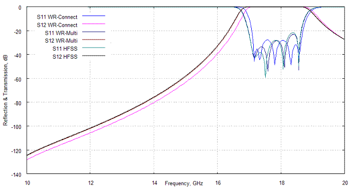
Figure 4a: Reflection and transmission (dB) versus frequency (GHz) computed using different software
Stepped Waveguide Transformers and High-Pass Filters
WR-Connect is a simple and efficient tool for designing stepped waveguide transformers and high-pass filters based on stepped transforming from the input/output interface waveguide to an evanescent-mode waveguide in the middle (see Figure 5a). Usually WR-Connect applied to such waveguide structures is as accurate as other waveguide simulation software based on so-called full-wave analysis (see Figure 5b) in respect to accuracy of fine fabrication and measurement.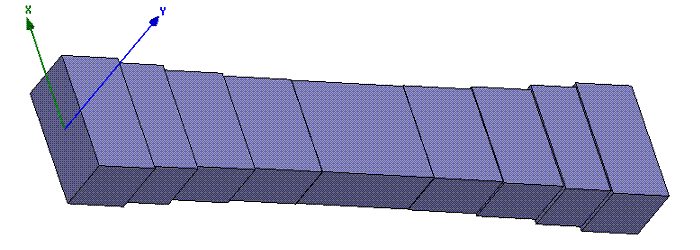
Figure 4a: WR-75 high-pass filter based on transforming steps - 3D surface view
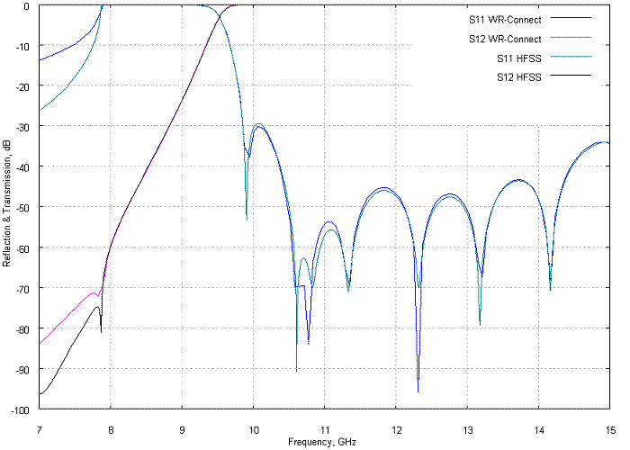
Figure 4a: Reflection and transmission (dB) versus frequency (GHz) computed using different software
Comments About Insertion Loss Simulation
Insertion loss (including dissipation loss) computed by WR-Connect is usually about the value simulated by other software (see figures 5,6) or mesured in the lab in the range +/-20% for silver-plated conventional iris and corrugated waveguide filters. Nevertheless, it is difficult to tell, which factor - software inaccuracy, quality of silver plating, surface roughness, quality of contacts or test inacuracy - practically contributes the most to the insertion loss uncertainty.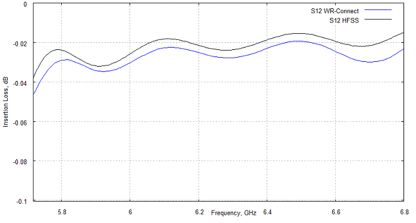
Figure 5: WR-Connect vs HFSS insertion loss correlation for the WR-137 high-pass filter
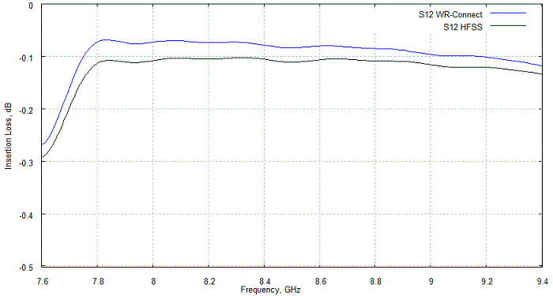
Figure 6: WR-Connect vs HFSS insertion loss correlation for the WR-112 low-pass filter
Comments About the Modes and Harmonics
When designing a waveguide low-pass filter, it is often required to check how the filter performs for the frequency spectrum (let us call it "harmonics" here) extended far away from the only dominant waveguide mode (TE10) propagation bandwidth. WR-Connect can be still a very efficient tool to simulate the harmonics carried by TEN0-modes. Nonetheless, the following notes should be taken into account:- The WR-Connect's simulation results can be only used for evaluation of transmission of the TENO spurious through the filter with no mode-to-mode conversions taken into account. For example, When computing TE20 spurious, WR-Connect does not take TE20 - TE40 conversion into account. Therefore, in this case, we need to change the mode index from 2 to 4 in order to evaluate the TE40 spurious. That is different from the popular full-wave waveguide software presenting the whole matrix.
- The simulation results, obtained from WR-Connect or any other software, do not actually represent the expected test results. That is because the software assumes the waveguide ports being perfectly matched (the reflected wave reflects and never returns back), but it is practically imposible to match the ports of measuring device to the ports of device under test (DUT) for all presented waveguide modes, or take the complex multi-moded interference into account.
- The simulation should always demonstrate much more rejection for harmonics than formally required by specs - to compensate very low accuracy of testing by tons of margin.
References:
- S.B. Conh "A theoretical and experimental study of a waveguide filter structure", Office Naval Res., Cruft Lab., Harvard Univ., Cambridge, Mass., Rep. 39, Apr. 25, 1948.
- Levy, R., "Aperiodic Tapered Corrugated Waveguide Filter", US Patent 3,597,710, Nov. 28, 1969.
- Goulouev, R., "Corrugated Waveguide Filter Having coupled Resonator Cavities", US Patent 6,169,466, Jan. 2, 2001 (see example).